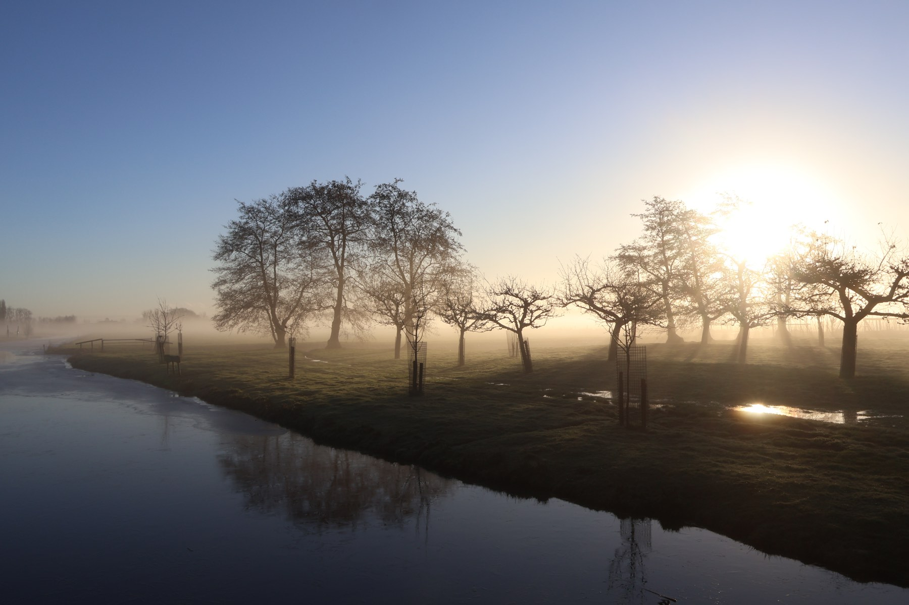

Vooruitblik · Vastgoed & landgoederen
Warmte uit uw eigen groenafval
Op een landgoed komt jaarlijks veel snoeihout en bermmaaisel vrij. Datzelfde materiaal kan de gebouwen verwarmen.
Monumentale panden zijn lastig te isoleren en komen moeilijk van het gas af. Elektrificeren loopt bovendien vaak stuk op netcongestie. Een compostwarmtesysteem levert warmte volledig los van het elektriciteitsnet, met materiaal dat u nu laat afvoeren.

Het resultaat
Wat het zou opleveren
Snoeihout, bermmaaisel en blad hoeven niet meer afgevoerd te worden. Ze gaan het systeem in en leveren warmte voor de gebouwen op het terrein, het hele jaar door en zonder gasaansluiting.
Wat overblijft is compost voor de eigen grond. Hoeveel warmte er in uw situatie te halen valt, hangt af van uw reststromen en uw warmtevraag. Dat rekenen we graag met u door.
- Warmte zonder gasaansluiting of zwaardere netaansluiting
- Snoeihout en bermmaaisel van het eigen terrein als brandstof
- Compost voor de eigen grond als tweede opbrengst
“[Echte woorden van Bob Duindam. Nog aan te leveren.]”